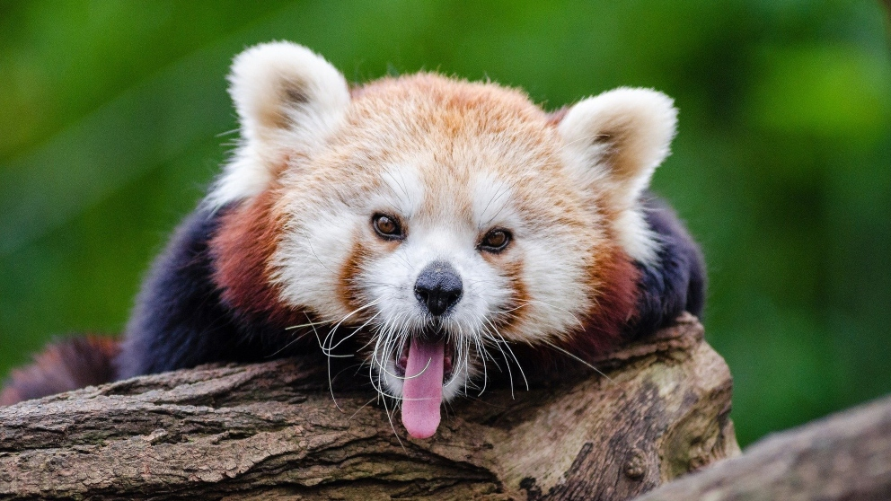
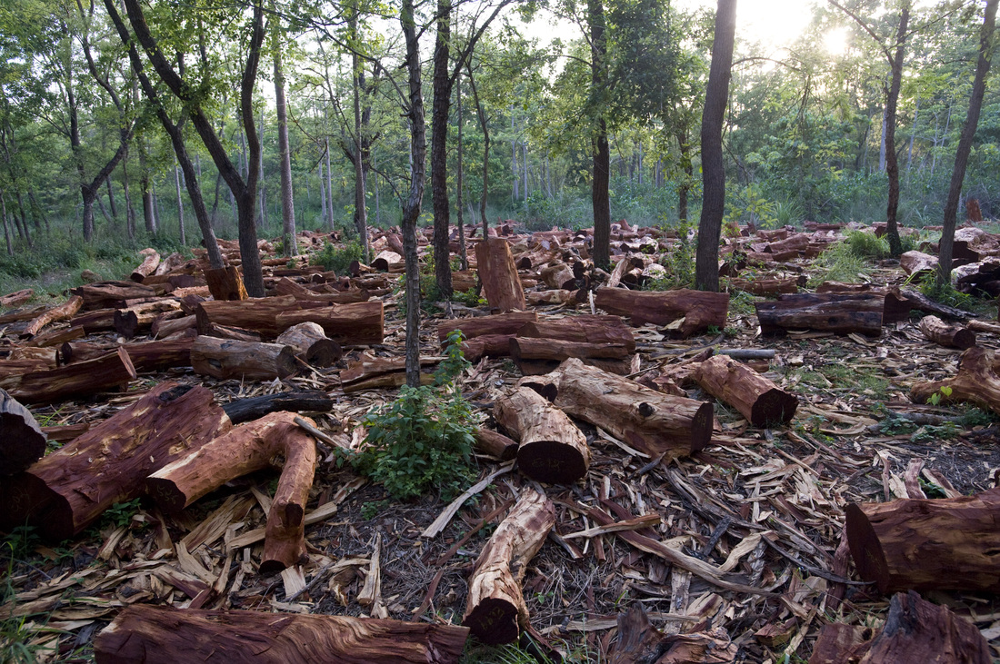
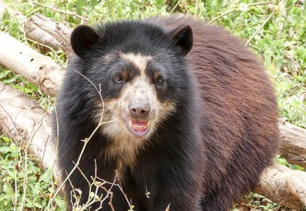
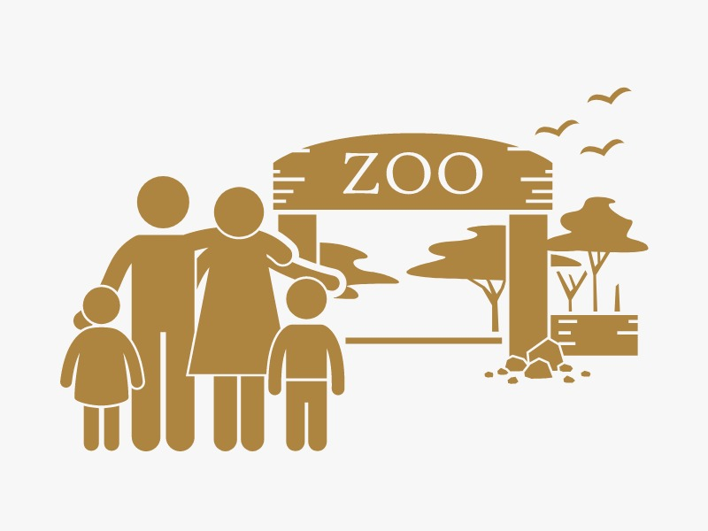

Calendario de eventos The WildGuard
Aqui podrás ver nuestro calendario todos los eventos que realizaremos, en caso de que quieras asistir no dudes en contactar con nosotos.
Febrero
2024
Lunes
Martes
Miercoles
Jueves
Viernes
Sábado
Domingo
Viaje California
Viaje a Perú
Viaje Nueva Zelanda
Charla donaciones
29
30
31
1
2
3
4
5
6
7
8
9
10
11
12
13
14
15
16
17
18
19
20
21
22
23
24
25
26
27
28
29
1
2
3
4
5
6
7
8
9
10
Actividades de la asociación
Hacer discursos en California sobre la prohibión de la caza , la deforestación de los diferentes ecosistemas.
Descripción: Iremos a Los Ángeles para dar un discurso sobre la prohibición y la deforestación para concenciar a la gente además hablaremos con los representantes de las asociaciones locales También hablaremos con la parte opositora que esta a favor ded la caza. Recopilaremos información y la estudiatremos para mejorar en los próximos discursos. 
Viaje a Perú para investigar nuevas especies de animles en peligro de extinción.
Descripción: Viajaremos a Perú y hablaremos con invesstigadores locales para que nos ayuden con nuestra invesstigación. Además visitaremos centros donde se encuentran animales en peligro de extinción, veremos sus instalaciones y como se comportan los animales. Despúes de quedarnos unos días volveremos a Galicia para prosegir con nuestras investigaciones. 
Promover planes para la reproducción en cautiverio en Nueva Zelanda
Descripción: La reproducción controlada es una forma muy efectiva de ayudar a ciertas especies. De esta manera, una vez alcanzada una población razonable, se podría reintroducir una especie amenazada en las zonas donde vivía históricamente. 
Charla para donaciones
Cuando visites zoológicos acreditados y reservas naturales locales, paga el precio de entrada recomendado. Tus donaciones ayudan a mantener estas áreas vitales de conservación. 